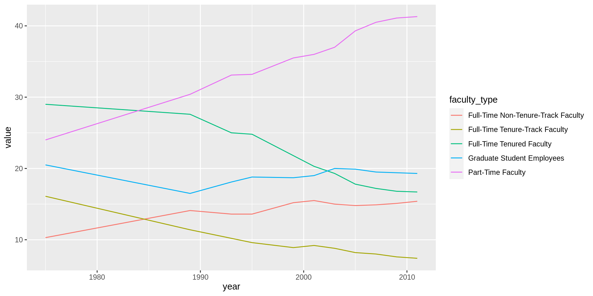

library(tidyverse)
library(dsbox) Lab 06 - Take a sad plot and make it better
Given below are two data visualizations that violate many data visualization best practices. Improve these visualizations using R and the tips for effective visualizations that we introduced in class. You should produce one visualization per dataset. Your visualization should be accompanied by a brief paragraph describing the choices you made in your improvement, specifically discussing what you didn’t like in the original plots and why, and how you addressed them in the visualization you created.
On the due date you will give a brief presentation describing one of your improved visualizations and the reasoning for the choices you made.
Learning goals
- Telling a story with data
- Data visualization best practices
- Reshaping data
Getting started
Go to the course GitHub organization and locate your homework repo, clone it in RStudio and open the R Markdown document. Knit the document to make sure it compiles without errors.
Warm up
Before we introduce the data, let’s warm up with some simple exercises. Update the YAML of your R Markdown file with your information, knit, commit, and push your changes. Make sure to commit with a meaningful commit message. Then, go to your repo on GitHub and confirm that your changes are visible in your Rmd and md files. If anything is missing, commit and push again.
Packages
We’ll use the tidyverse package for much of the data wrangling and visualisation and the data lives in the dsbox package. These packages are already installed for you. You can load them by running the following in your Console:
Data
The datasets we’ll use are called instructors and fisheries from the dsbox package. Since the datasets are distributed with the package, we don’t need to load them separately; they become available to us when we load the package. You can find out more about the datasets by inspecting their documentation, which you can access by running ?instructors and ?fisheries in the Console or using the Help menu in RStudio to search for instructors or fisheries. You can also find this information here and here.
Exercises
Instructional staff employment trends
The American Association of University Professors (AAUP) is a nonprofit membership association of faculty and other academic professionals. This report compiled by the AAUP shows trends in instructional staff employees between 1975 and 2011, and contains an image very similar to the one given below.

Let’s start by loading the data used to create this plot.
staff <- read_csv("data/instructional-staff.csv")Each row in this dataset represents a faculty type, and the columns are the years for which we have data. The values are percentage of hires of that type of faculty for each year.
# A tibble: 5 × 12
facult…¹ `1975` `1989` `1993` `1995` `1999` `2001` `2003` `2005` `2007` `2009`
<chr> <dbl> <dbl> <dbl> <dbl> <dbl> <dbl> <dbl> <dbl> <dbl> <dbl>
1 Full-Ti… 29 27.6 25 24.8 21.8 20.3 19.3 17.8 17.2 16.8
2 Full-Ti… 16.1 11.4 10.2 9.6 8.9 9.2 8.8 8.2 8 7.6
3 Full-Ti… 10.3 14.1 13.6 13.6 15.2 15.5 15 14.8 14.9 15.1
4 Part-Ti… 24 30.4 33.1 33.2 35.5 36 37 39.3 40.5 41.1
5 Graduat… 20.5 16.5 18.1 18.8 18.7 19 20 19.9 19.5 19.4
# … with 1 more variable: `2011` <dbl>, and abbreviated variable name
# ¹faculty_typeIn order to recreate this visualization we need to first reshape the data to have one variable for faculty type and one variable for year. In other words, we will convert the data from wide format to long format.
But before we do so, a thought exercise: How many rows will the long-format data have? It will have a row for each combination of year and faculty type. If there are 5 faculty types and 11 years of data, how many rows will we have?
We do the wide to long conversion using a new function: pivot_longer(). The animation below show how this function works, as well as its counterpart pivot_wider().

The function has the following arguments:
pivot_longer(data, cols, names_to = "name")- The first argument is
dataas usual. - The second argument,
cols, is where you specify which columns to pivot into longer format – in this case all columns except for thefaculty_type - The third argument,
names_to, is a string specifying the name of the column to create from the data stored in the column names of data – in this caseyear
staff_long <- staff %>%
pivot_longer(cols = -faculty_type, names_to = "year") %>%
mutate(year = as.numeric(year))Let’s take a look at what the new longer data frame looks like.
staff_long# A tibble: 55 × 3
faculty_type year value
<chr> <dbl> <dbl>
1 Full-Time Tenured Faculty 1975 29
2 Full-Time Tenured Faculty 1989 27.6
3 Full-Time Tenured Faculty 1993 25
4 Full-Time Tenured Faculty 1995 24.8
5 Full-Time Tenured Faculty 1999 21.8
6 Full-Time Tenured Faculty 2001 20.3
7 Full-Time Tenured Faculty 2003 19.3
8 Full-Time Tenured Faculty 2005 17.8
9 Full-Time Tenured Faculty 2007 17.2
10 Full-Time Tenured Faculty 2009 16.8
# … with 45 more rowsAnd now let’s plot is as a line plot. A possible approach for creating a line plot where we color the lines by faculty type is the following:
staff_long %>%
ggplot(aes(x = year, y = value, color = faculty_type)) +
geom_line()
But note that this results in a message as well as an unexpected plot. The message is saying that there is only one observation for each faculty type year combination. We can fix this using the group aesthetic following.
staff_long %>%
ggplot(aes(x = year, y = value, group = faculty_type, color = faculty_type)) +
geom_line()Include the line plot you made above in your report and make sure the figure width is large enough to make it legible. Also fix the title, axis labels, and legend label.
Suppose the objective of this plot was to show that the proportion of part-time faculty have gone up over time compared to other instructional staff types. What changes would you propose making to this plot to tell this story and why.
Implement the changes you proposed in the previous exercise.
🧶 ✅ ⬆️ Knit, commit, and push your changes to GitHub with an appropriate commit message. Make sure to commit and push all changed files so that your Git pane is cleared up afterwards.
Fisheries
Fisheries and Aquaculture Department of the Food and Agriculture Organization of the United Nations collects data on fisheries production of countries. This Wikipedia page lists fishery production of countries for 2016. For each country tonnage from capture and aquaculture are listed. Note that countries whose total harvest was less than 100,000 tons are not included in the visualization.
A researcher shared with you the following visualization they created based on these data. 😳

- Can you help them make improve it? First, brainstorm how you would improve it. Then create the improved visualization and write up the changes/decisions you made as bullet points. It’s ok if some of your improvements are aspirational, i.e. you don’t know how to implement it, but you think it’s a good idea.
Load the data.
fisheries <- read_csv("data/fisheries.csv")- Create a new data visualisation for these data that implements the improvements you proposed in the previous exercise (or many of them as you can).
🧶 ✅ ⬆️ Knit, commit, and push your changes to GitHub with an appropriate commit message. Make sure to commit and push all changed files so that your Git pane is cleared up afterwards and review the md document on GitHub to make sure you’re happy with the final state of your work.
Wrapping up
Go back through your write up to make sure you’re following coding style guidelines we discussed in class. Make any edits as needed.
Also, make sure all of your R chunks are properly labelled, and your figures are reasonably sized.
Once the team leader for the week pushes their final changes, others should pull the changes and knit the R Markdown document to confirm that they can reproduce the report.
More ugly charts
Want to see more ugly charts?